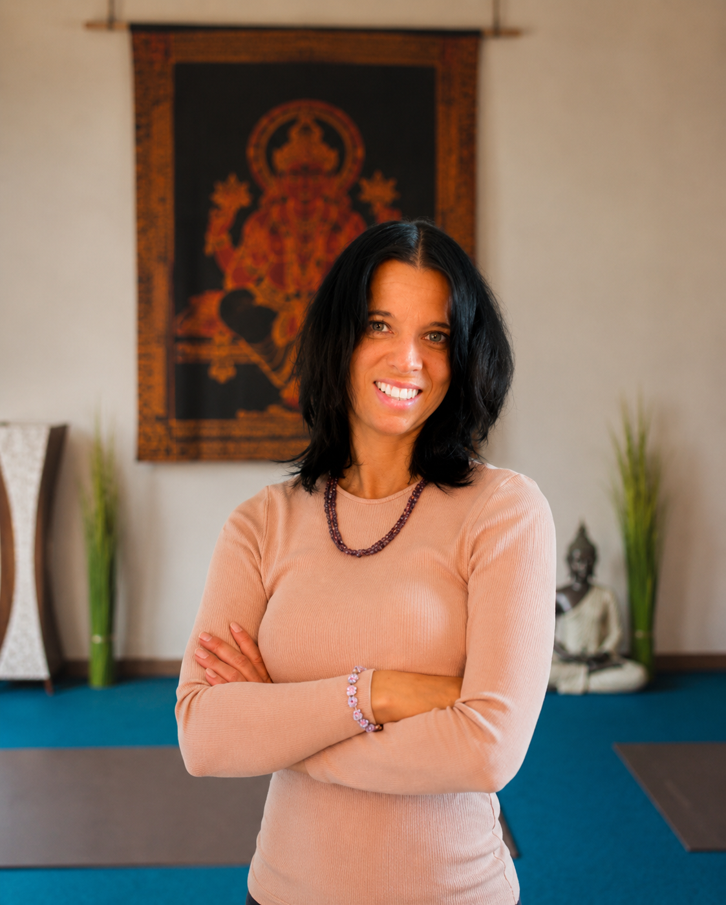

Yoga ist für alle da – unabhängig von Alter, Erfahrung oder Beweglichkeit. Diese Überzeugung trägt meine gesamte Arbeit, seit ich 2012 das Studio Yoga am Hofgarten in Augsburg gegründet habe.
Ich unterrichte mit langjähriger Erfahrung und großer Achtsamkeit – individuell, bodenständig und undogmatisch. Ein besonderer Fokus meiner Arbeit liegt auf der Rückengesundheit, dem Aufbau von Körperbewusstsein und der harmonischen Verbindung von Atem und Bewegung.
Der Körper gewinnt an Stabilität durch Bewegung – der Geist an Klarheit durch Stille. Diese Balance wirkt heilsam und stärkt uns für den Alltag.
Ob Einsteiger*in oder erfahrene*r Yogi*ni – bei Yoga am Hofgarten sind Sie jederzeit herzlich willkommen. Denn: Es ist nie zu spät, mit Yoga zu beginnen.
Über zehn Jahre Erfahrung in der Vermittlung eines achtsamen, körpergesunden Yoga-Weges.
Zertifizierte Yogalehrerin, spezialisiert auf Rückengesundheit und Haltungskorrektur.
Ausgebildete Wirbelsäulentrainerin – für gezielte Mobilisierung und Stabilisierung.
Zertifizierte Hormonyogalehrerin – sanfte Begleitung durch alle Lebensphasen.
Jede Stunde wird auf die Teilnehmer*innen abgestimmt – auf ihre Tages-Verfassung, ihre Bedürfnisse, ihre Ziele.
Bewusstes Atmen, ruhige Präsenz und ein achtsamer Umgang mit dem eigenen Körper stehen im Zentrum.
Ohne Dogmen, ohne Show – Yoga so, wie es Ihnen im Alltag wirklich hilft: stabil, ehrlich, wirksam.
Kleine Gruppen mit maximal fünf Teilnehmer*innen. Einzelstunden nach Vereinbarung – für echte Nähe.
Yoga ist für mich mehr als eine Übungspraxis – es ist ein Weg, dem eigenen Körper zuzuhören und dem Geist Raum zu geben. In einer Zeit, in der alles schneller wird, ist ein Studio wie dieses ein bewusster Gegenpol: klein, still, echt.